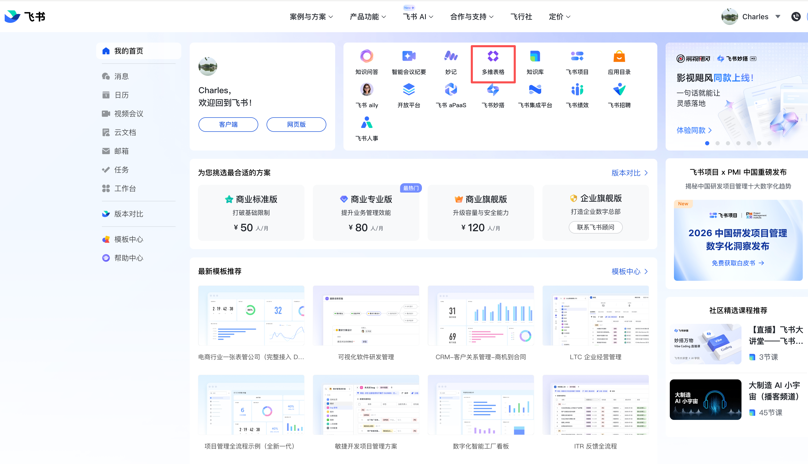
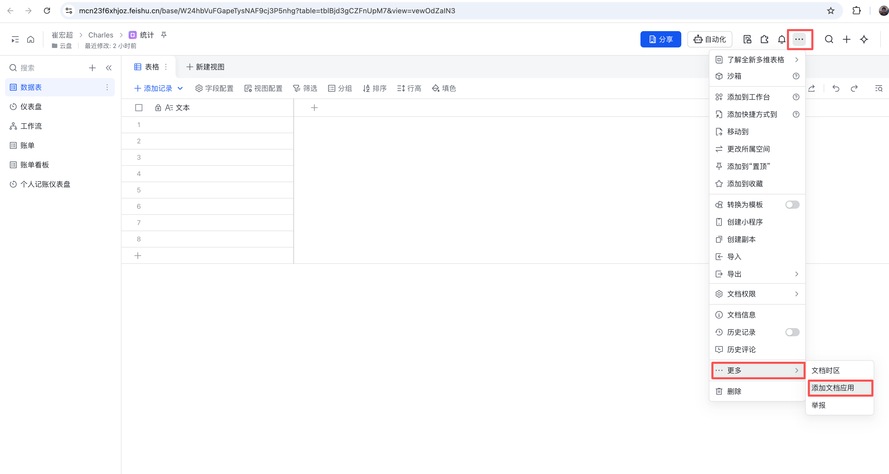
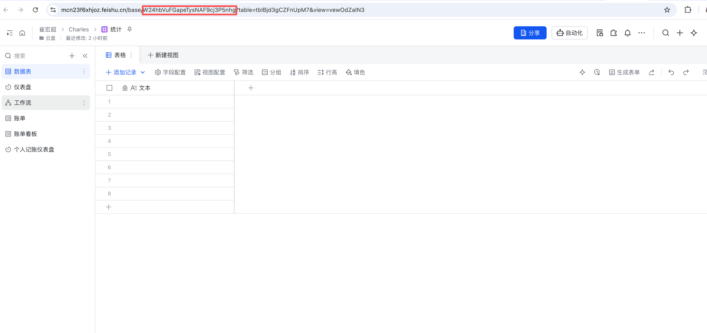
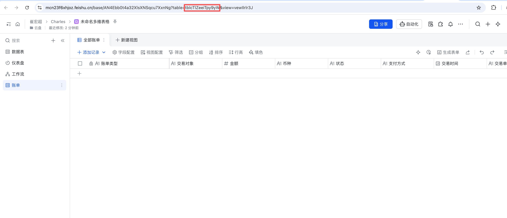
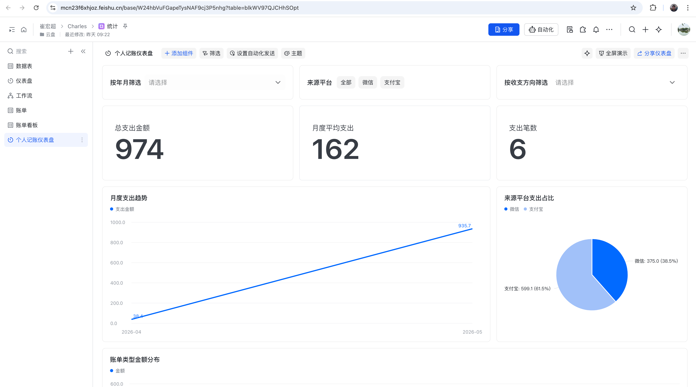

把微信聊天里发送的账单截图（微信/支付宝）自动识别成结构化字段，写入飞书多维表格，并按交易单号去重，避免重复记账。
record_id。用户在微信把图片消息发给 Hermes（iLink Bot 身份）。
图片以加密形式存放在 CDN，消息里带 encrypted_query_param 与文件密钥信息。
网关从 CDN 拉取加密文件，使用每文件独立 AES-128-ECB 密钥自动解密（支持 base64/hex 密钥格式）。
提取结构化 JSON：金额、交易时间、交易单号、交易对象、来源平台（微信/支付宝）等。
金额转 Number；交易时间转毫秒时间戳；账单类型/币种/来源平台按规则归一化。
先调用 records/search 按 交易单号 检索，命中则跳过写入，避免重复。
未重复时调用 records/create 写入结构化账单字段，返回 record_id。
Hermes 将结果回复微信。若需发送媒体，先本地 AES-128-ECB 加密后上传 CDN，再发送加密引用。
说明：媒体链路默认启用 AES-128-ECB 加解密（自动处理），前提是环境已安装 cryptography。文档：Weixin User Guide
App ID、App Secret。bitable:app、base:record:create、base:record:read、base:table:read）。
{
"scopes": {
"tenant": [
"base:app:read",
"base:field:create",
"base:field:read",
"base:record:create",
"base:record:read",
"base:record:update",
"base:table:create",
"base:table:read",
"bitable:app",
"bitable:app:readonly"
],
"user": []
}
}


app_token 和 table_id。~/.hermes/config.yaml 配置 lark MCP Servermcp_servers:
lark:
command: npx
args:
- -y
- '@larksuiteoapi/lark-mcp'
- mcp
- -a
- <LARK_APP_ID>
- -s
- <LARK_APP_SECRET>
env:
LARK_DOMAIN: https://open.feishu.cn
timeout: 120
LARK_APP_ID：你在飞书开放平台应用详情页看到的 App ID（应用唯一标识）。
LARK_APP_SECRET：同一页面中的 App Secret（应用密钥，用于鉴权，注意保密，不要公开到代码仓库）。
app_token。
图：app_token 在 URL 中的位置
把下面提示词发给 Hermes，让它自动建表并校验字段：
请在这个飞书 Base（app_token: <你的 app_token>）里创建一个名为「账单」的数据表，并创建以下字段： 1. 账单类型（Text） 2. 交易对象（Text） 3. 金额（Number） 4. 币种（Text） 5. 状态（Text） 6. 支付方式（Text） 7. 交易时间（DateTime，显示格式 yyyy-MM-dd HH:mm） 8. 交易单号（Text） 9. 来源平台（Text） 创建完成后，请返回 table_id，并读取字段列表确认字段全部创建成功。
创建后从 URL 提取 table_id 并记录。

图：table_id 在 URL 中的位置
先把下面提示词发给 Hermes（可直接复制）：
请帮我在 Hermes 的自动化配置中新增（或更新）一个 payment_bill_bitable 配置，绑定我当前飞书账单表： app_token: <app_token> table_id: <table_id> 字段映射要求： - bill_type -> 账单类型 - counterparty -> 交易对象 - amount -> 金额 - currency -> 币种 - status -> 状态 - payment_method -> 支付方式 - transaction_time -> 交易时间 - transaction_id -> 交易单号 - source_platform -> 来源平台 字段类型要求： - 金额: number - 交易时间: date 请直接修改 ~/.hermes/config.yaml，在 automations: 下面新增（或更新）该配置，并检查： 1) field_names 与飞书真实列名完全一致； 2) table_id 可读可写； 3) 如果已有同名配置则做幂等更新，不重复添加。
生成的结果如下:
automations:
payment_bill_bitable:
enabled: true
app_token: AN4Ebb0t4a32XlsXNSqcu7XxnNg
table_id: tblcTlZeeiTpy9yW
field_names:
bill_type: "账单类型"
counterparty: "交易对象"
amount: "金额"
currency: "币种"
status: "状态"
payment_method: "支付方式"
transaction_time: "交易时间"
transaction_id: "交易单号"
source_platform: "来源平台"
field_types:
"账单类型": text
"交易对象": text
"金额": number
"币种": text
"状态": text
"支付方式": text
"交易时间": date
"交易单号": text
"来源平台": text
注意：field_names 必须与飞书真实列名完全一致，否则会报 FieldNameNotFound。
gateway/run.py（实现自动识别 + 去重 + 自动写入）先把下面提示词发给 Hermes（可直接复制）：
请直接修改文件 ~/.hermes/hermes-agent/gateway/run.py，为账单截图自动入飞书实现完整链路（自动识别 + 去重 + 自动写入）。 必须使用并串联以下函数（不存在则补齐）： 1) _maybe_capture_payment_bill_to_bitable(...) 2) _extract_payment_bill_info_from_image(...) 3) _build_payment_bill_bitable_fields(...) 4) _find_existing_payment_bill_records(...) 5) _create_payment_bill_bitable_record(...) 实现要求： A. 识别 - 在 _extract_payment_bill_info_from_image 中调用 vision 分析图片。 - 提示词强制“只输出 JSON 对象”，不得输出解释文字。 - 解析时兼容 ```json fenced code block，提取首个 JSON 对象。 - JSON 字段至少包含： is_bill, source_platform, bill_type, counterparty, amount, currency, status, payment_method, transaction_time, transaction_id, summary, raw_text。 B. 标准化 - 在 _build_payment_bill_bitable_fields 中把 bill 字段映射到 config.yaml 的 field_names。 - 金额字段按 number 转换（如 "3.00" -> 3.0）。 - 交易时间转换为飞书 DateTime 毫秒时间戳。 - 账单类型统一映射：支付/转账/收款/退款。 - 币种统一映射：CNY/USD/HKD/EUR（默认 CNY）。 - 来源平台识别：微信/支付宝。 C. 去重 - 在写入前必须先按“交易单号”查询 records/search。 - 命中重复则跳过写入，并返回“已存在相同交易单号，已跳过重复写入”。 - 未命中才执行 _create_payment_bill_bitable_record 写入。 D. 配置读取 - 从 ~/.hermes/config.yaml 读取 automations.payment_bill_bitable。 - 使用其中 app_token、table_id、field_names、field_types。 - 若配置缺失或 disabled，直接跳过自动入库，不影响普通聊天。 E. 稳定性 - 任何异常都要记录日志并降级，不要阻断主消息流程。 - 仅在微信平台且消息包含图片时触发。 完成后请： 1) 输出实际修改了哪些函数； 2) 给出关键 diff 摘要； 3) 提供最小验证步骤（新图写入、重复图跳过、支付宝来源识别）。
按执行顺序保证函数串联：
_maybe_capture_payment_bill_to_bitable(...) # 总入口：检测是否触发账单自动入库 _extract_payment_bill_info_from_image(...) # 识别图片并提取结构化账单 JSON _build_payment_bill_bitable_fields(...) # 字段映射与标准化（金额/时间/类型/来源） _find_existing_payment_bill_records(...) # 写入前查重（按交易单号） _create_payment_bill_bitable_record(...) # 创建飞书记录并返回 record_id
交易单号 先查重，命中即跳过。hermes gateway restart。在完成账单数据入库后，可用飞书 AI 快速生成仪表盘。把下面提示词发给飞书 AI：
基于“账单”表创建一个个人记账仪表盘。 需要包含： 1）月度支出趋势（按“年月”，指标“支出金额求和”） 2）来源平台占比（按“来源平台”，指标“支出金额求和”） 3）账单类型分布（按“账单类型”，指标“金额求和”） 并添加全局筛选：年月、来源平台、收支方向。 默认筛选收支方向=支出。

Image #1：个人记账仪表盘示例（含月度趋势、来源占比、筛选器等组件）。
原因：配置表字段名与飞书真实列名不一致，或表仍是旧表结构。
解决：校正 field_names，并确保存在 交易单号 等目标列。
原因：table_id 不在当前 app_token 下。
解决：先 appTable/list 确认真实表，再更新配置。
原因：识别规则关键词过少。
解决：补充支付宝/微信多信号关键词联合判定。
原因：网关未重启，仍在跑旧逻辑。
解决：重启 Hermes gateway 后再回归验证。
现象：显示格式带秒可能不被接受。
解决：显示格式用 yyyy-MM-dd HH:mm。
正确策略：永远先查飞书再写，不依赖本地缓存。
规则：transaction_id 命中即跳过。